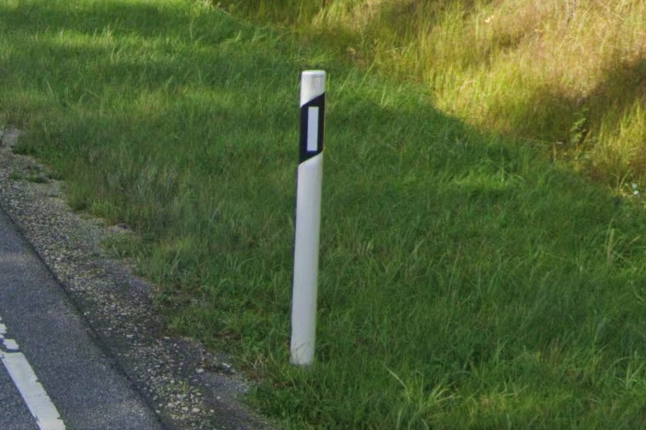
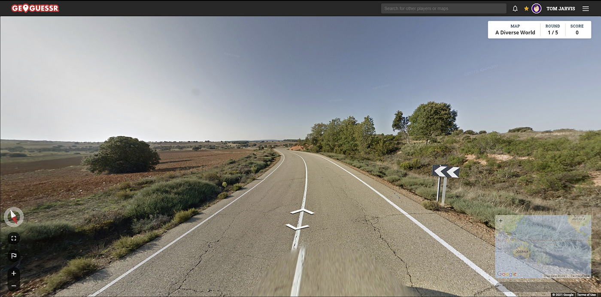

SLIP
Hello!
Welcome to a project I am currently working on, SLIP, which stands for Street Level Image Processing.
This project focuses on developing a system for Open Source Intelligence (OSINT) gathering through Image Processing Techniques, that I became interested in through the game GeoGuessr The purpose is to identify geographic locations by analyzing distinctive infrastructure features that vary between regions and countries. The system employs advanced computer vision and machine learning techniques to extract and analyze geographical infrastructure:


You can read the design document here